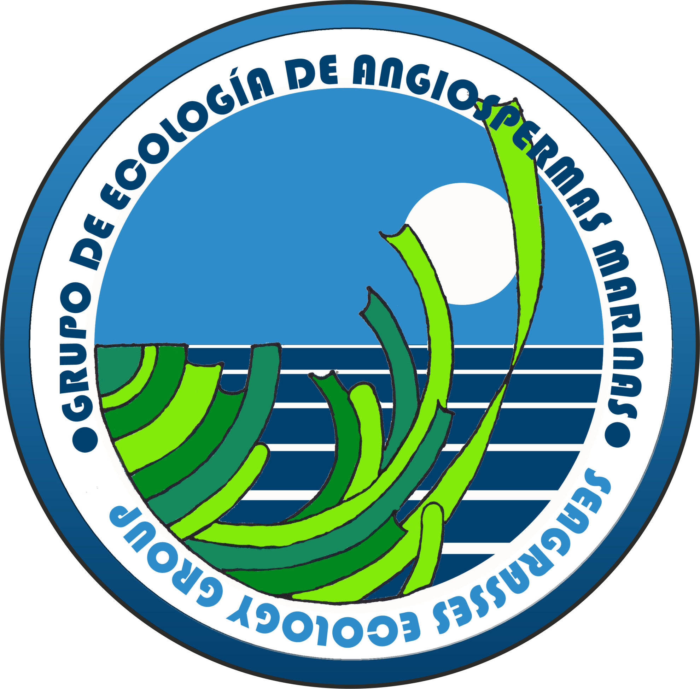
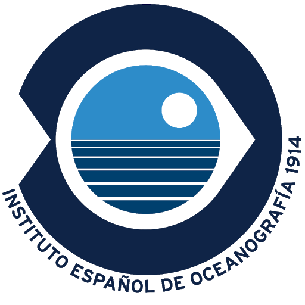
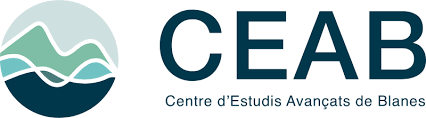
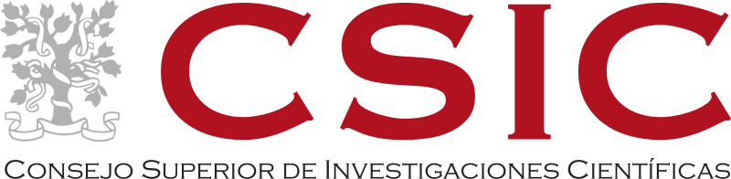
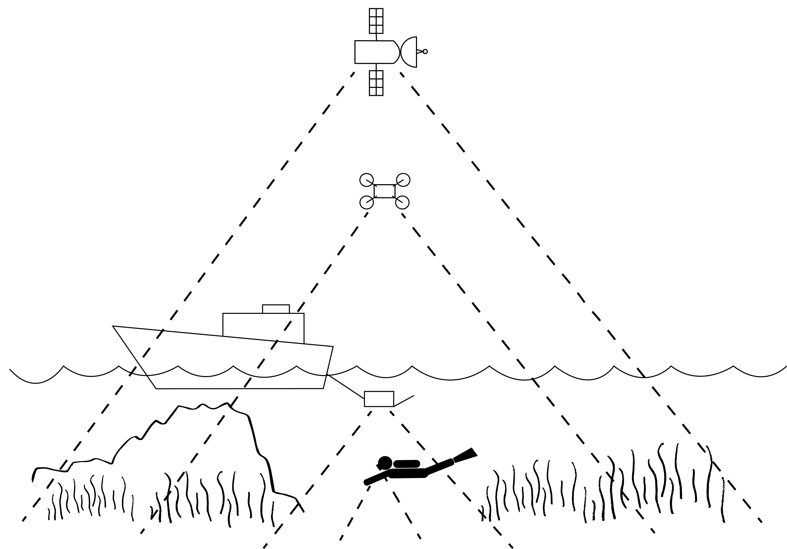
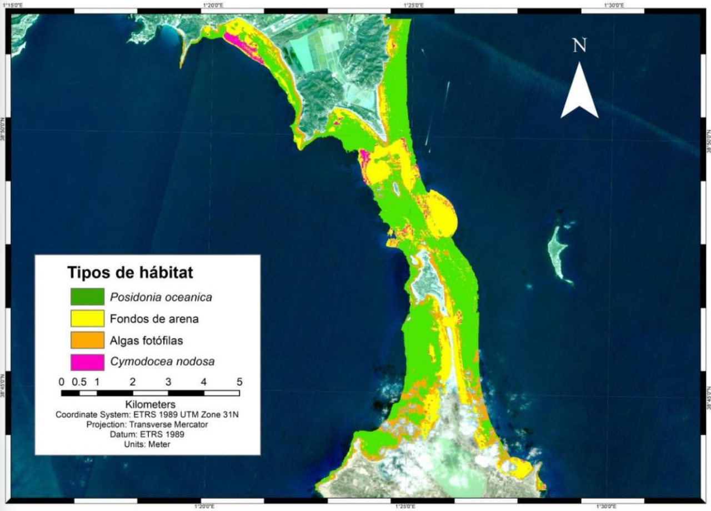
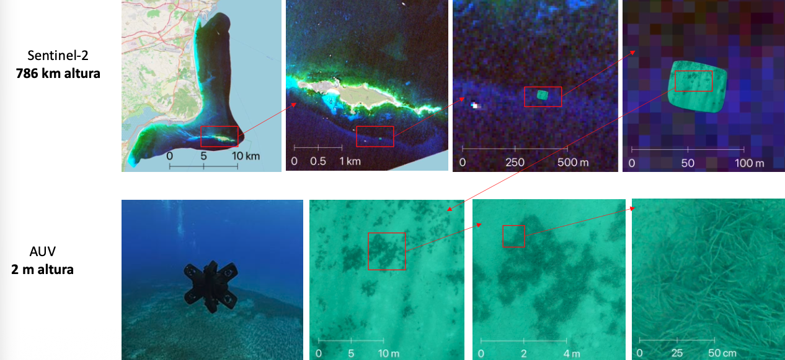
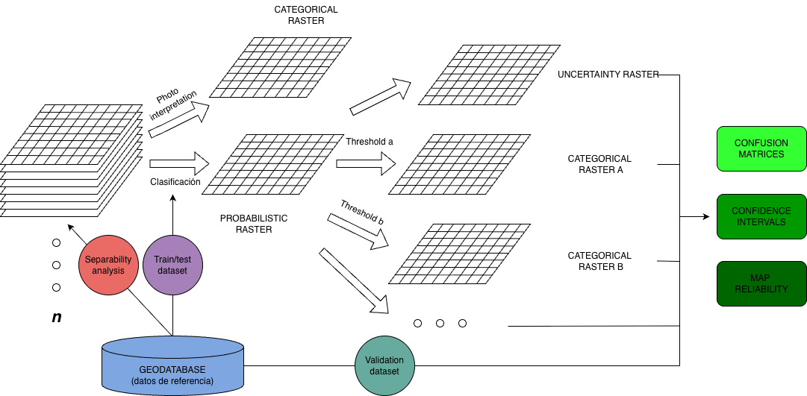

gantt
dateFormat YYYY-MM-DD
axisFormat %Y
section Year 1
Literature review :a1, 2026-01-01, 10M
Methodology development :b2, 2026-03-01, 14M
Remote sensing analysis :b1, 2026-03-01, 18M
section Year 2
Field campaigns & sampling :a2, 2027-01-01, 16M
Manuscript drafting :c2, 2027-09-01, 12M
section Year 3
Thesis writing :d1, 2028-04-01, 8M
Submission :d2, 2028-08-01, 6M
Defense :d3, 2028-10-01, 6M
Remote sensing of marine vegetation for monitoring and managing coastal ecosystems.
Research plan
PhD candidate
Fernando García-González  (Seagrass Ecology Group, IEO-CSIC)
(Seagrass Ecology Group, IEO-CSIC)
PhD directors
Jaime Bernardeau Esteller (Seagrass Ecology Group, IEO-CSIC)
Jordi Boada (CEAB-CSIC) (CEAB-CSIC)
Pablo González-González (AIC, Oviedo University)
Phd supervisor
Jana Verdura (GR MAR, Girona University)
    

Abstract
Ocean environmental conditions are changing at unprecedented rates causing profound ecosystem transformations. These changes are especially important along the coast where intensifying human activity tends to concentrate. As a result, marine vegetated ecosystems are severely degrading and substantial areas of both seagrass meadows and macroalgal forests have already been lost. Since these are crucial foundation species fostering marine biodiversity and ecosystem functioning, important services to society are dissipating.
The challenge of reconciling development and conservation must be urgently addressed at the global scale. In this context, the European Union (EU) has implemented an ambitious Integrated Maritime Policy, based on two main pillars: (i) the Marine Strategy Framework Directive (MSFD, 2008/56/EC), aimed at managing anthropogenic activities and achieving Good Environmental Status, and (ii) the Maritime Spatial Planning Framework Directive (MSPFD, 2014/89/EU). Within this ecosystem-based approach, the EU has also adopted the European Biodiversity Strategy, aligned with the objectives of the Convention on Biological Diversity, which focus on improving biodiversity and ecosystem services, maintaining ecological integrity and connectivity, and strengthening genetic diversity. In addition, other European directives and international agreements—such as the Habitats Directive (92/43/EEC), the Barcelona Convention, and OSPAR—aim to protect coastal marine ecosystems through habitat conservation, biodiversity protection, and the reduction of anthropogenic pressures.
Achieving these conservation goals requires robust, scientifically grounded methodologies for assessing the status of coastal ecosystems to guide decision making. A key component of these assessments is the ability to monitor habitat distribution periodically across multiple spatial scales, evaluating aspects such as range, extent, and the degree of fragmentation or connectivity. In this context, there is a clear trade-off between scale and accuracy. Traditional in situ distribution monitoring techniques provide high precision but are limited to small spatial scales. In contrast, the recent growth of remote sensing and geospatial data analysis offers considerable potential to address habitat distribution at broader scales.
The fundamental challenge lies in ensuring that cartographic products derived from remote sensors support solid scientific inference (McRoberts 2011) and align with the transdisciplinary knowledge required for effective environmental decision-making (Kilminster et al. 2015). Achieving this requires a balance between in situ and ex situ information, and between technical and ecological knowledge: two sine qua non conditions for remote sensing to contribute effectively to conservation status assessment and coastal management.
The main objective of this research project is to leverage strong ecological expertise and long term in situ datasets to develop and test novel RS and geospatial methodologies for mapping and monitoring marine vegetated ecosystems in the intertidal and subtidal coastal zones. To achieve this, the potential of different RS platforms will be explored across two spatial scales. At the fine scale, underwater and aerial drones will be used to produce high-resolution maps, enabling the study of habitat spatial configuration, fragmentation and conservation status. At the broad scale, satellite imagery will be employed to generate maps of habitat distribution and to investigate temporal dynamics in habitat extent.

Background
RS relies on the propagation of signals, optical or acoustic, between the target and the sensor enabling large-scale and long-term data collection. Instruments on satellites, aircrafts and submarines provide high-resolution imagery and measurements critical for monitoring environmental changes. These technologies have evolved from early aerial photography and low-resolution satellite sensors to the modern high-resolution, multispectral, and hyperspectral platforms allowing systematic data collection over extended areas and time periods and providing the foundation for Earth Observation.
Optical RS for coastal habitat mapping and monitoring is a fast evolving field with many advancements in the recent years, both in the intertidal (Calleja et al. 2017; Zoffoli et al. 2020, 2021, 2022; Davies et al. 2023, 2024a, 2024b, 2026; Oiry et al. 2024) and subtidal zones (Fornes et al. 2006; Brando et al. 2009; Traganos and Reinartz 2018; Poursanidis et al. 2019; Traganos et al. 2022). I personally developed my Master’s thesis Remote Sensing Applications in marine protected areas: using Sentinel-2 for satellite bathymetry estimation and benthic habitat mapping, which, in 2021, was a pioneer work using Sentinel-2 in the Balearic Archipelago.

Using RS to map subtidal or underwater vegetation is inherently challenging because the water medium is highly absorbing. As a result, the electromagnetic signal that reaches the seabed and is reflected back to the sensor, the benthic reflectance, is largely restricted to the visible wavelengths (400-700 nm). This benthic reflectance varies spectrally with bottom composition and typically exhibits peaks and troughs related to pigments and other light absorbing, scattering and fluorescent features of the benthos. Together, these features form a spectral “fingerprint” characteristic of benthic constituent type, mixtures of constituents, pigment concentration, leaf area index, sediment grain size, and ecosystem condition. Moreover, subtidal mapping using aerial drones or satellites is restricted to the optically shallow waters, defined as regions where the bottom exerts a measurable influence on the water-leaving reflectance. Optically shallow waters are dependent on the bathymetry and the varying optical properties of both the water column and the benthos. Some of these limitations could be overcame through the use of underwater drones also called Underwater Autonomous Vehicles (AUVs), which operate closer to the seabed and are therefore able to more directly capture benthic reflectance, albeit at the cost of reduced spatial coverage.

Monitoring intertidal vegetation with RS also presents specific challenges. Although water absorption is not a limiting factor, intertidal environments are characterized by high spatial complexity and strong temporal variability driven by tides. As a result, analyses must rely on imagery acquired under low-tide conditions to ensure consistency. In this context, the combined use of aerial drones and satellites allows the complementary strengths of both platforms to be exploited, balancing drone spatial detail with satellite spatial coverage.
3D model of a cuvette. France, 2022. More models available here
Objectives
Main phd objective:
Leverage strong ecological expertise and long term in situ datasets to develop and test novel RS and geospatial methodologies for mapping and monitoring marine vegetated ecosystems in the intertidal and subtidal coastal zones.
Specific objective 1: fine scale subtidal
Explore the potential of integrating underwater photogrammetry, autonomous underwater vehicles, and advanced image analysis to overcome traditional limitations in P. oceanica deep-limit monitoring. Generating ultra-high resolution maps of the deep limits will allow for higher spatial precision, enabling the incorporation of landscape analysis to asses the structure and spatial configuration of the meadow limits. These seascape metrics offer a novel and promising perspective for assessing the condition of P. oceanica meadows at their deep limits, complementing traditional indicators.
Specific objective 2: fine scale subtidal
Develop a methodology, based on aerial drones, to asses underwater barren extensions caused by the overgrazing of herbivorous sea urchins P. lividus and A. lixula. Analyze temporal dynamics of barren expansion and contraction in relation to sea urchin harvesting.
Specific objective 3: broad scale subtidal
Use Sentinel-2 to design a scalable and reproducible Python processing workflow to map underwater vegetation in Special Areas of Conservation (SAC) as defined by the Habitat Directive. Assess the spectral separability of different species and bottom types across different bioregions and develop a robust accuracy assessment methodology that can be applied to these RS-derived cartographies and other mapping products. Temporal trends in habitat distribution will also be analyzed for dynamic seagrass species (Kilminster et al. 2015).
Specific objective 4: broad scale intertidal
Use Sentinel-2 to design a scalable and reproducible Python processing workflow to study the temporal variability of N. noltei intertidal meadows in the north coast of Spain.
Methodology
The methodological framework is based on the integration of multi-platform remote sensing data acquired at different spatial and temporal scales with high quality field data. Ultra-high-resolution imagery obtained from autonomous underwater vehicles (AUVs) and aerial drones is first processed using photogrammetric workflows to generate georeferenced orthomosaics and three-dimensional products of the seabed and intertidal zones. These datasets provide detailed information on habitat structure and are used both for fine-scale mapping and as reference data for model calibration and validation. At broader scales, satellite imagery is processed through standardized pre-processing steps, including atmospheric and water-column corrections. Spectral, textural, and contextual features are then extracted from all platforms and harmonized within a common geospatial framework. Habitat mapping is performed using a combination of empirical classification approaches, physics-based models, and machine-learning techniques, producing probabilistic raster outputs that represent class membership or habitat probability. Finally, these probabilistic products are thresholded and post-processed to generate categorical habitat maps, whose accuracy and uncertainty are assessed using independent field observations and high-resolution reference data.

Data management plan
General considerations
This project will leverage a unique, long-term dataset of seagrass and other marine vegetation observations collected over the past 20 years by the Seagrass Ecology Group (IEO-CSIC) and CEAB-CSIC. These in situ observations will serve to calibrate, validate, and interpret multi-temporal remote sensing products.
The research will integrate heterogeneous datasets including (i) long-term field observations (e.g. presence/absence, cover, depth limits, structural descriptors), (ii) ultra-high-resolution imagery derived from AUV and aerial drone surveys, and (iii) satellite-based remote sensing products. Newly generated datasets (orthomosaics, derived indices, probabilistic rasters, categorical habitat maps, and accuracy assessment outputs) will be produced following standardized and reproducible processing workflows, generating high-value datasets for coastal ecosystem monitoring, trend analysis, and future conservation efforts.
FAIR Principles
Findable: Datasets will have persistent identifiers (DOIs) and standardized metadata (Darwin Core, ISO 19115/INSPIRE), including spatial/temporal coverage, provenance, and uncertainty.
Accessible: Data will be openly available whenever possible through trusted repositories such as OBIS, EMODnet, Zenodo, or institutional data portals of IEO-CSIC, respecting embargo periods when required. Access conditions will be clearly stated, and data will be provided using open, non-proprietary formats (e.g. GeoTIFF, NetCDF, GeoPackage, CSV).
Interoperable: Data will follow community standards, harmonized coordinate systems, and consistent variable naming and units to enable integration with long-term field observations.
Reusable: Documentation will include data dictionaries, methodology, and quality-control procedures. Open licenses (CC BY/CC BY-NC) will facilitate reuse for monitoring, validation, and conservation planning.
Timeline
Having worked as a geospatial data analyst and research assistant for the past five years has paved the way for this PhD. Part of the proposed work will therefore build on and bring to completion ongoing and previously initiated studies. As a result, the timeline of the PhD is closely aligned with the continuation of my current work and research activities.
Researcher development plan
1. Training Courses
- Attend workshops and training to strengthen technical expertise in remote sensing, geospatial data analysis, and deep learning, while also developing skills in coding, data management, FAIR principles, and reproducible research practices.
- Potential courses are:
- Experimental design and sampling, Girona University (1 ECTS)
- IOCCG Summer Lecture Series, Frontiers in Ocean Optics and Ocean Colour Science
- Experimental design and sampling, Girona University (1 ECTS)
2. Research Stays
- Erasmus Mobility: A 6-month research stay at an international partner institution is planned during the first year, ideally coinciding with methodology development and remote sensing analysis. This will allow exposure to complementary methodologies, strengthen collaborations, and expand the research network.
3. Participation as attendee:
- Monthly group meetings and internal seminars.
- Coordination meetings with public institutions.
4. Participation as speaker
- Participation in at least one national or international conference per year is planned to present results, engage with the scientific community, and receive feedback.
- Potential congresses are:
5. Open Science and Citizen Science Activities
- Ensure all generated data and code follow FAIR principles
- Participation in public outreach:
- Science week, Oceanographic Center of Gijón (2026, 2027, 2028)
6. Scientific Publications
- Target publications during PhD:
- Year 1: At least 1 research paper on the monitoring of P. oceanica deep limit using Autonomous Underwater Vehicles.
- Year 2: At least 1 research paper on the monitoring of underwater barrens using aerial drones.
- Year 3: At least 1 research paper on the use of Sentinel-2 to monitor underwater vegetation in marine protected areas.
- Consider submitting the thesis as a compilation of publications
7. Training Planning
| Year | Activities |
|---|---|
| 2026 | Transversal & specific courses, literature review, remote sensing analyses, Erasmus stay (6 months), attendance at seminars and workshops |
| 2027 | Field campaigns, remote sensing analyses, attendance & presentations at conferences |
| 2028 | Data integration, thesis writing, manuscript drafting, oral presentations, open science dissemination, submission and defense of thesis |
Bibliography
Brando, Vittorio E., Janet M. Anstee, Magnus Wettle, Arnold G. Dekker, Stuart R. Phinn, and Chris Roelfsema. 2009. “A Physics Based Retrieval and Quality Assessment of Bathymetry from Suboptimal Hyperspectral Data.” Remote Sensing of Environment 113 (4): 755–70. https://doi.org/10.1016/j.rse.2008.12.003.
Calleja, Felipe, Cristina Galván, Ana Silió-Calzada, José A. Juanes, and Bárbara Ondiviela. 2017. “Long-Term Analysis of Zostera Noltei: A Retrospective Approach for Understanding Seagrasses’ Dynamics.” Marine Environmental Research 130 (September): 93–105. https://doi.org/10.1016/j.marenvres.2017.07.017.
Davies, Bede Ffinian Rowe, Pierre Gernez, Andréa Geraud, Simon Oiry, Philippe Rosa, Maria Laura Zoffoli, and Laurent Barillé. 2023. “Multi- and Hyperspectral Classification of Soft-Bottom Intertidal Vegetation Using a Spectral Library for Coastal Biodiversity Remote Sensing.” Remote Sensing of Environment 290 (May): 113554. https://doi.org/10.1016/j.rse.2023.113554.
Davies, Bede Ffinian Rowe, Simon Oiry, Mar Roca, Philippe Rosa, Maria Laura Zoffoli, Dimitris Poursanidis, Tobias Dolch, et al. 2026. “An Initial Map of European Intertidal Seagrass.” Remote Sensing of Environment 333 (January): 115116. https://doi.org/10.1016/j.rse.2025.115116.
Davies, Bede Ffinian Rowe, Simon Oiry, Philippe Rosa, Maria Laura Zoffoli, Ana I. Sousa, Oliver R. Thomas, Dan A. Smale, et al. 2024a. “A Sentinel Watching over Inter-Tidal Seagrass Phenology Across Western Europe and North Africa.” Communications Earth & Environment 5 (1): 382. https://doi.org/10.1038/s43247-024-01543-z.
———, et al. 2024b. “Intertidal Seagrass Extent from Sentinel-2 Time-Series Show Distinct Trajectories in Western Europe.” Remote Sensing of Environment 312 (October): 114340. https://doi.org/10.1016/j.rse.2024.114340.
Fornes, A., G. Basterretxea, A. Orfila, A. Jordi, A. Alvarez, and J. Tintore. 2006. “Mapping Posidonia Oceanica from IKONOS.” ISPRS Journal of Photogrammetry and Remote Sensing 60 (5): 315–22. https://doi.org/10.1016/j.isprsjprs.2006.04.002.
Kilminster, Kieryn, Kathryn McMahon, Michelle Waycott, Gary A. Kendrick, Peter Scanes, Len McKenzie, Katherine R. O’Brien, et al. 2015. “Unravelling Complexity in Seagrass Systems for Management: Australia as a Microcosm.” Science of The Total Environment 534 (November): 97–109. https://doi.org/10.1016/j.scitotenv.2015.04.061.
McRoberts, Ronald E. 2011. “Satellite Image-Based Maps: Scientific Inference or Pretty Pictures?” Remote Sensing of Environment 115 (2): 715–24. https://doi.org/10.1016/j.rse.2010.10.013.
Oiry, Simon, Bede Ffinian Rowe Davies, Ana I. Sousa, Philippe Rosa, Maria Laura Zoffoli, Guillaume Brunier, Pierre Gernez, and Laurent Barillé. 2024. “Discriminating Seagrasses from Green Macroalgae in European Intertidal Areas Using High-Resolution Multispectral Drone Imagery.” Remote Sensing 16 (23): 4383. https://doi.org/10.3390/rs16234383.
Poursanidis, Dimitris, Dimosthenis Traganos, Peter Reinartz, and Nektarios Chrysoulakis. 2019. “On the Use of Sentinel-2 for Coastal Habitat Mapping and Satellite-Derived Bathymetry Estimation Using Downscaled Coastal Aerosol Band.” International Journal of Applied Earth Observation and Geoinformation 80 (August): 58–70. https://doi.org/10.1016/j.jag.2019.03.012.
Traganos, Dimosthenis, Chengfa Benjamin Lee, Alina Blume, Dimitris Poursanidis, Hrvoje Čižmek, Julie Deter, Vesna Mačić, et al. 2022. “Spatially Explicit Seagrass Extent Mapping Across the Entire Mediterranean.” Frontiers in Marine Science 9 (July): 871799. https://doi.org/10.3389/fmars.2022.871799.
Traganos, Dimosthenis, and Peter Reinartz. 2018. “Mapping Mediterranean Seagrasses with Sentinel-2 Imagery.” Marine Pollution Bulletin 134 (September): 197–209. https://doi.org/10.1016/j.marpolbul.2017.06.075.
Zoffoli, Maria Laura, Pierre Gernez, Laurent Godet, Steef Peters, Simon Oiry, and Laurent Barillé. 2021. “Decadal Increase in the Ecological Status of a North-Atlantic Intertidal Seagrass Meadow Observed with Multi-Mission Satellite Time-Series.” Ecological Indicators 130 (November): 108033. https://doi.org/10.1016/j.ecolind.2021.108033.
Zoffoli, Maria Laura, Pierre Gernez, Simon Oiry, Laurent Godet, Sébastien Dalloyau, Bede Ffinian Rowe Davies, and Laurent Barillé. 2022. “Remote Sensing in Seagrass Ecology: Coupled Dynamics Between Migratory Herbivorous Birds and Intertidal Meadows Observed by Satellite During Four Decades.” Edited by Kylie Scales and Alice Jones. Remote Sensing in Ecology and Conservation, December, rse2.319. https://doi.org/10.1002/rse2.319.
Zoffoli, Maria Laura, Pierre Gernez, Philippe Rosa, Anthony Le Bris, Vittorio E. Brando, Anne-Laure Barillé, Nicolas Harin, et al. 2020. “Sentinel-2 Remote Sensing of Zostera Noltei-Dominated Intertidal Seagrass Meadows.” Remote Sensing of Environment 251 (December): 112020. https://doi.org/10.1016/j.rse.2020.112020.